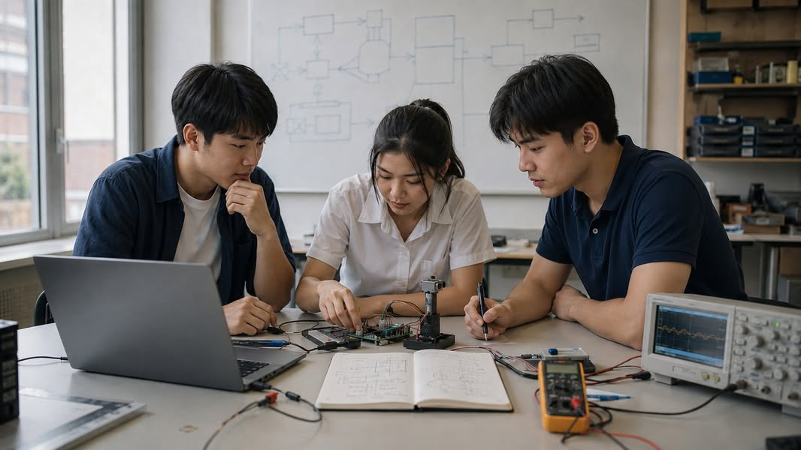

บัณฑิตวิศวกรรมคอมพิวเตอร์ที่ผมอยากเห็น: วิศวกรที่มีแกนและเรียนรู้ต่อได้
{kind=link}

ผมอยากเห็นบัณฑิตที่เมื่อเจอโจทย์ใหม่ แม้เป็นเรื่องที่ยังไม่เคยเรียนหรือเทคโนโลยีที่เพิ่งเกิดขึ้น ก็สามารถเริ่มต้นได้อย่างมั่นใจ ไม่ใช่เพราะเขารู้ทุกอย่าง แต่เพราะเขารู้ว่าจะเริ่มคิดอย่างไร
เขาเริ่มจากทำความเข้าใจว่าปัญหาคืออะไร ใครได้รับผลกระทบ ข้อจำกัดอยู่ตรงไหน และความสำเร็จควรวัดจากอะไร จากนั้นจึงเลือกเครื่องมือ ออกแบบ ลงมือสร้าง ทดสอบ และยอมรับผลลัพธ์ตามความเป็นจริง
เมื่อยังไม่รู้ ต้องรู้ว่าจะลดความไม่แน่นอนอย่างไร
วิศวกรไม่จำเป็นต้องรู้คำตอบตั้งแต่ต้น และไม่จำเป็นต้องคุ้นเคยกับเทคโนโลยีทุกตัว แต่เมื่อยังไม่รู้ เขาควรรู้ว่าจะหาความรู้จากไหน จะออกแบบการทดลองอย่างไร และจะค่อย ๆ ลดความไม่แน่นอนของปัญหาลงได้อย่างไร
ความสามารถนี้ติดตัวไปได้นานกว่าความชำนาญในเครื่องมือใดเครื่องมือหนึ่ง เพราะเทคโนโลยีเปลี่ยนได้รวดเร็ว แต่กระบวนการตั้งคำถาม หา evidence และเรียนรู้จากผลจริงยังเป็นฐานของการทำงานเสมอ
มองเห็นระบบ ไม่ใช่เพียงชิ้นส่วน
ในฐานะวิศวกรคอมพิวเตอร์ เขาควรรู้ว่า algorithm ที่ดีบนกระดาษอาจใช้ไม่ได้เมื่อหน่วยความจำไม่พอ เครือข่ายไม่เสถียร latency สูง พลังงานมีจำกัด หรือระบบต้องทำงานร่วมกับอุปกรณ์และผู้คนในโลกจริง
เขาควรคิดข้ามระดับของ abstraction ได้ ตั้งแต่ข้อมูลและ algorithm ไปจนถึง software, hardware, network และระบบที่นำไปใช้งานจริง ไม่จำเป็นต้องเป็นผู้เชี่ยวชาญทุกระดับ แต่ต้องเข้าใจพอจะเห็นว่าแต่ละส่วนเชื่อมโยงและส่งผลต่อกันอย่างไร
ซื่อตรงต่อข้อผิดพลาด ข้อมูล และหลักฐาน
ถ้าระบบยังใช้ไม่ได้ เขาไม่ซ่อนข้อผิดพลาด ถ้าข้อมูลยังไม่ดี เขาไม่รีบสรุป และถ้าผลการทดลองไม่เป็นอย่างที่หวัง เขาไม่เลือกเฉพาะผลที่สนับสนุนความคิดของตนเอง
เมื่อ AI ให้คำตอบได้ เขาไม่หยุดเพียงการได้คำตอบ แต่ถามต่อว่าคำตอบนั้นมาจากอะไร น่าเชื่อถือเพียงใด ใช้ในบริบทนี้ได้หรือไม่ มีข้อจำกัดอะไร และใครต้องรับผิดชอบเมื่อระบบตัดสินใจผิดพลาด นี่คือหัวใจของการสร้างอย่างรับผิดชอบ
ปริญญาตรีไม่ต้องผลิตผู้เชี่ยวชาญสำเร็จรูป
หลักสูตรปริญญาตรีไม่จำเป็นต้องทำให้ทุกคนเป็นผู้เชี่ยวชาญสำเร็จรูปด้าน AI, cloud, security, data, embedded systems หรือเทคโนโลยีใดเทคโนโลยีหนึ่ง เพราะเส้นทางของแต่ละคนยังเปลี่ยนได้ และเทคโนโลยีสำคัญในอีกสิบปีอาจยังไม่มีชื่อในวันนี้
สิ่งที่ควรติดตัวไปยาวนานกว่าคือวิธีคิดและวิธีทำงานที่มั่นคง: ตั้งโจทย์ให้ชัด → สร้างคำตอบ → พิสูจน์ด้วยหลักฐาน → เรียนรู้และไปต่อ
สร้างให้ใช้ได้ และพิสูจน์ให้เชื่อได้
คำว่า “สร้าง” ไม่ได้หมายถึงเพียงเขียนโปรแกรมให้รัน แต่หมายถึงการเปลี่ยนความคิดให้เป็นระบบที่ใช้งานได้จริงภายใต้ข้อจำกัดที่มี ส่วนการ “พิสูจน์” ไม่ใช่เพียงแสดงตัวเลขที่ดูดี แต่ต้องอธิบายได้ว่าวัดอะไร วัดอย่างไร ผลหมายความว่าอะไร และหลักฐานเพียงพอหรือยังที่จะเชื่อในสิ่งที่สร้าง
วิศวกรที่สร้างโดยไม่พิสูจน์อาจได้ระบบที่ดูเหมือนทำงาน ส่วนวิศวกรที่พิสูจน์โดยไม่สร้างอาจได้ความรู้ที่ยังไม่เผชิญข้อจำกัดจริง การศึกษาจึงต้องฝึกให้สองสิ่งนี้เดินไปด้วยกัน
งานสำคัญแทบไม่มีงานใดเกิดจากคนคนเดียว
บัณฑิตควรทำงานร่วมกับผู้อื่น รับฟังคำวิจารณ์ อธิบายเรื่องซับซ้อนให้คนต่างพื้นฐานเข้าใจ อ่านและต่อยอดงานของคนอื่น รวมถึงสร้างงานของตัวเองในแบบที่คนอื่นตรวจสอบ ดูแล และพัฒนาต่อได้
เขาต้องเข้าใจว่า requirement ไม่ได้มาจากเครื่องจักร แต่มาจากคน องค์กร สังคม และโลกจริงที่เต็มไปด้วยเงื่อนไขซึ่งบางครั้งขัดแย้งกัน การตัดสินใจทางวิศวกรรมจึงมีทั้งมิติทางเทคนิคและความรับผิดชอบต่อผู้ที่ได้รับผลกระทบ
วิศวกรที่มีแกน จึงมีอิสระกำหนดอนาคตของตัวเอง
เมื่อมีวิธีคิดและวิธีทำงานแบบนี้ เขาอาจเริ่มต้นเป็นนักพัฒนาซอฟต์แวร์ วิศวกรระบบ วิศวกร embedded หรือ robotics นักวิเคราะห์ข้อมูล ผู้ประกอบการ หรือนักวิจัย แล้วเติบโตไปสู่บทบาทอื่นที่ยังไม่มีชื่อในวันนี้ก็ได้
สิ่งที่อยากให้ติดตัวออกไปจากมหาวิทยาลัยจึงไม่ใช่ความรู้สึกว่า “ฉันเรียนมาครบแล้ว” แต่คือความมั่นใจว่า แม้วันนี้ยังไม่รู้คำตอบ ฉันรู้ว่าจะเริ่มต้นอย่างไร จะสร้างอย่างไร จะตรวจสอบอย่างไร และจะเรียนรู้ต่ออย่างไร
ผมจึงอยากเห็นบัณฑิตที่คิดให้ชัด มองเห็นระบบ สร้างอย่างรับผิดชอบ ทำงานร่วมกับผู้อื่น และพิสูจน์สิ่งที่ตนสร้างได้ นั่นคือวิศวกรที่มีแกน และมีอิสระที่จะกำหนดอนาคตของตัวเอง